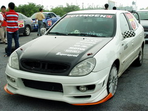
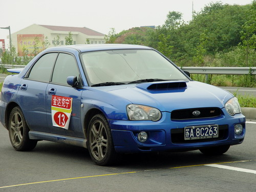

04赛．南京站 @ Jun 25, 2006
中国超跑车队今年砸重金启动的一项全国性“0-400米直线竞速赛事”昨天在靠近南京的溧阳举行，超跑车队的这项赛事，意在让民间非法飙车族通过合法的入门赛事飙车取乐，提升车队的知名度并最终赢利探索方法。本来上海和南京放在一起比赛的，据说上海的车比南京的好许多，所以分开赛了。南京除了两辆斯巴鲁，一辆改装的宝来速度尚可之外，即使是宝马730和克莱斯勒也就是来凑个热闹。民间飙车族已迅速成长，但在城市公共道路上飙车不仅非法而且危险。我认识几个喜欢飘车的家伙，有时受他们影响也会偶尔加速行驶一段，挺有意思。这种比赛对参赛者来说，需要的不是高额的车改装费用；不是专业的驾驶技术；更不是一纸赛车驾驶执照，而是对赛车的热爱与激情。有个MM居然驾驶着QQ也来参赛，一上场大家都鼓掌。
04赛，即Drag Racing，指0－400米直线加速赛，是一项起源于美军军营的大众化汽车运动。经过几十年的发展，目前在世界各地广泛开展，已经成为普通车迷最容易参与、规则最为简单的汽车运动之一。本次“‘我快我赢保时捷’金达克宁超跑车队城市英雄挑战赛”是中国大陆第一次范围的04比赛，由金达克宁超跑车队和搜狐网承办。本次赛事的年度总冠军，将成为金达克宁超跑车队的签约车手，有机会参加专业培训并成为车队提供的保时捷GT-3 CUP专业赛车车主。
南京/上海
6月24日，星期六
建邺区庐山路南沿(奥体中心东)
武汉
6月28日，星期三
沌口经济开发区石岭（与初赛相同）
广州/深圳
7月1日，星期六
花都炭步镇（与初初赛相同）
线上报名活动已经于3月15日开始，
报名地点：http://www.5Sai.com/04（喔赛网）。
周六04赛现场








10 Responses to “04赛．南京站”
2006-06-26
8错8错，都是很漂亮的车车


下面是我儿子的最新片片，
2006-06-26
哇，太可爱了，好玩~~会说话的眼睛呢......
2006-06-27
A good looking baby! I see a further 飙车手.
2006-06-27
不错哦，搞得我都有点心动，Christina有没有试一下啊？
2006-06-27
what a nice boy! he is big enough to play a ball. thanks for Christina’s pictures. I saw only a female there is Christina. Street Racing is dangerous and always links to alcohol and drugs in the USA. But it looks much better in Nanjing.
2006-06-27
代表我儿子谢谢大家，他的眼睛确实会说话，我老婆也这么说的。
今天很伤心，意大利用一个假摔淘汰了澳大利亚。 ：（
2006-06-27
全世界都知道是假摔啊，还有人投拍了意大利队训练假摔的录像。你可以去多看几次回放。
http://www.youtube.com/watch?v=QRO626ImQek
有什么证据说澳洲作风不好么？我同意热身赛对荷兰是不太好，但是正式比赛没有更好的了。2场小组赛180分钟有160分钟处于打平或者落后状态，但是这并没有磨灭他们的斗志，这种精神力量和团体力量也为被说成作风不好么？
2006-06-28
Hey, 油子! Did you forget to take your medication again this morning? Take it, then take good look at those pictures. There are other women in them. Remember that you are a married man. Do not try to be a high school kid.
2006-06-29
Watch your language! Ask your parents to send you back to kindergarten and learn how to speak politely.
2006-06-30
I do know how to be polite. My above post serves as a wake up call to you.
Here is my last piece of advice you will get from me. “be happy for what you already have. do not daydreaming about something you can’t get”
Leave A Reply
存档只读，评论已关闭。